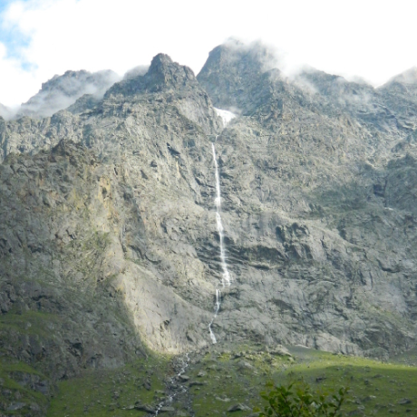

Долина водопадов
Местоположение
Мидаграбинское ущелье

В Северной Осетии разработаны несколько туристических маршрутов, охватывающие знаменитые достопримечательности горных районов республики. Самый популярный из них – «Путешествие в Долину водопадов». Маршрут начинается в селе Кобан - это название известно всем, кто хоть немного интересуется историей и археологией.
Далее маршрут проходит через село Даргавс, рядом с ним находится самый известный из средневековых некрополей Северного Кавказа. Конечная цель маршрута – Мидаграбинские водопады, чудо природы, открытое для туристов несколько лет назад.